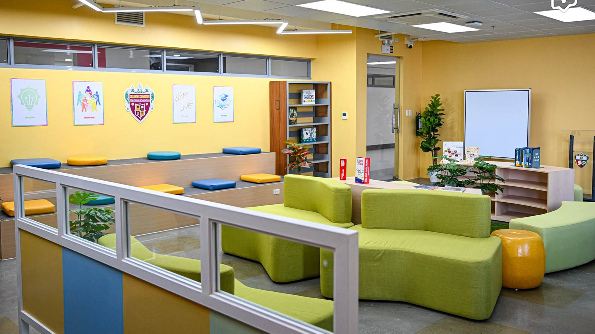

Degree Programs at UST CICS
The University of Santo Tomas College of Information and Computing Sciences offers three specialized four-year bachelor's degree programs, each designed to give students targeted expertise across different branches of technology and computing:

Bachelor of Science in Computer Science (BSCS)
Program Overview
Duration: 4 years
The Bachelor of Science in Computer Science is a four-year degree focused on computing theory, algorithms, and core software engineering practices, equipping students with the skills to build and adapt complex software to address technical challenges.
The program offers three specializations to choose from:
Core Computer Science
The Core Computer Science track equips students for further education and research through advanced courses in very theoretical traditional areas that go beyond what is covered at the undergraduate level.
Game Development
The Game Development track lets students blend creative ideas with code to build real 2D and 3D games, taking them all the way from initial concepts and animations to full multi-platform releases using industry-standard tools.
Data Science
In the Data Science track, students mix math and programming to solve real-world data problems, preparing them for tech careers or research roles where they can build smart, data-driven tools.

Bachelor of Science in Information Systems (BSIS)
Program Overview
Duration: 4 years
The Bachelor of Science in Information Systems program bridges the gap between tech and business, teaching students how to build and manage systems that improve company operations and tackle everyday business challenges.
The program offers two specializations to choose from:
Business Analytics
The Business Analytics specialization combines core technical skills with corporate ethics and legal compliance across six main areas: Fundamentals of Business Analytics, Enterprise Data Management, Analytics Modeling, Analytics Techniques and Tools, Analytics Application, and a practical internship.
Service Management
Following outcome-based learning standards, the Service Management track helps students from any background step into the IT-BPO sector, giving them the real-world skills to land that first job and build a long-term career.

Bachelor of Science in Information Technology (BSIT)
Program Overview
Duration: 4 years
The Bachelor of Science in Information Technology is a four-year degree focused on hands-on skills in setting up computers and networks, along with practical training to diagnose, troubleshoot, and repair hardware issues.
The program offers three specializations to choose from:
Network and Security
In the Network and Security track, students learn everything from basic network setups to advanced cybersecurity, gaining the skills to build, maintain, and defend system networks through solid security practices and routine audits.
Web and Mobile App Development
Building on core programming courses, the Web and Mobile App Development track covers advanced languages, frameworks, and modern tools to teach students how software is actually built in the industry.
IT Automation
The IT Automation track teaches students to connect different systems and software so they can run on their own, using scripts, sensors, and specialized programs to eliminate manual work.
Departments

Department of
Computer Science
The Department of Computer Science at the University of Santo Tomas combines strong academics with hands-on coding and modern tech training, giving students the tools to build innovative software and grow alongside the industry.
Department of
Information Systems
The Department of Information Systems at the University of Santo Tomas pairs technical skills with real-world business strategy, training students to design and manage tech systems that help companies grow and adapt.
Department of
Information Technology
The Department of Information Technology at the University of Santo Tomas combines hands-on training in cybersecurity, web development, and automation with core values, preparing students to lead responsibly in an ever-changing tech industry.
Summarization
| Program | Abbreviation | Duration | General Focus |
|---|---|---|---|
| Computer Science | BSCS | 4 Years | Computing, algorithms, software and computer science |
| Information Systems | BSIS | 4 Years | Technology and business information systems |
| Information Technology | BSIT | 4 Years | Application and management of information technology |
Recognitions
Center of Development (Computer Science, Information Systems, Information Technology)
Level II Re-Accreditation (BS Computer Science, BS Information Systems, BS Information Technology)